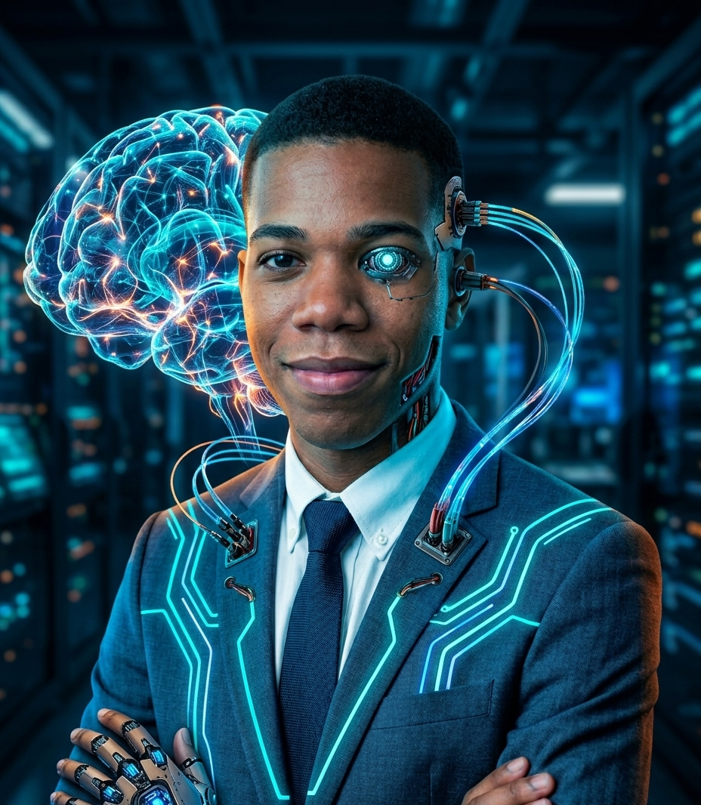

Bienvenido a Mi Portafolio

Hola Soy Pierre Rooben Julberus, estudiante de informática cursando mi primer año de carrera en este 2026. Me considero un desarrollador web en formación, apasionado por crear experiencias digitales únicas a través de código limpio en HTML, CSS y JavaScript. Al estar iniciando este trayecto académico de aproximadamente cinco años en total, me entusiasma dar mis primeros pasos en el desarrollo tecnológico, combinando la lógica de programación con mi deseo constante de aprender nuevas tecnologías y mejorar mis habilidades día a día. Este portafolio es el punto de partida que refleja mi progreso, mis proyectos iniciales y mi compromiso con la evolución continua en el área tecnológica.
Visión Personal sobre la IA en la Informática
Como estudiante que inicia su formación en el año 2026, considero que la Inteligencia Artificial es el pilar fundamental de la informática moderna. Mi visión es que la IA potenciará nuestras capacidades desde las etapas formativas, permitiéndonos automatizar tareas repetitivas para enfocarnos en la lógica, la arquitectura y la creatividad. En los próximos cuatro años de carrera que tengo por delante, dominar la integración de la IA será tan indispensable como aprender las bases de la programación.